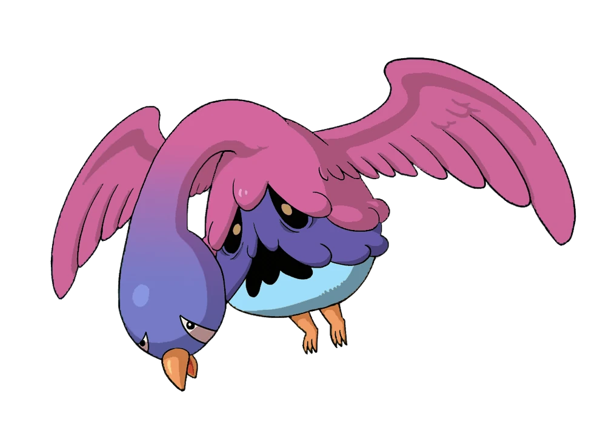
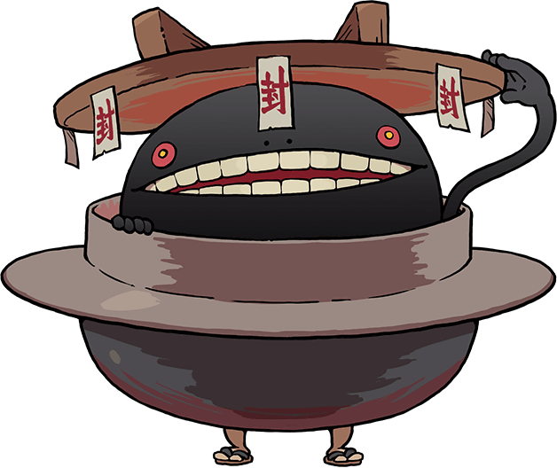

What's new?
Hello everyone! I'm back with another update for the website.
I've just rolled out **Version 2.4.1** to deploy some quick bug fixes right after our
major **2.4.0** release.
This time, I focused on adding highly requested language options,
cleaning up the code behind the scenes, and making the site faster and smoother.
Version (Undefined) Update
- Localization: Added initial Japanese language support for Yo-kai names and descriptions on the Medallium and Yo-kai Info pages.
- Database: Added new, dedicated text database for Japanese Yo-kai text as well as text package for future language options.
- Performance: Restructured and optimized the CSS layout, removing redundant properties to significantly improve page loading speeds.
- Code Refactoring: Moved main global styling properties over to centralized root variables, making the codebase much cleaner and easier to maintain.
I might add more features in the future, depending on what you would like to see next.
This website is focused on creating tools and providing information to players.
However, if you're interested in other features like RAM editing, feel free to message me!
I might add them in the next update if they aren't too complicated to code.
Hope all of you will have a great day!
Below you can see all content that was added previously.

If you have any questions, you can contact me through my discord: @hilwinUpdate History:
2.4.1:
- • Changed search filter to use correct element property
- • Fixed medalImg attribute lookup to use inspiritSteff.EffectID
2.4.0:
- • Added initial Japanese localization
- • Added text database for Japanese Yo-kai text
- • Restructured and optimized the CSS layout
- • Moved main global styling properties over to centralized root variables
2.3.1:
- • Updated website documentation
2.3.0:
- • Optimized Damage Calculator and added UUBL tier
- • Added option for "Copy to Clipboard" (copy wheel image)
- • Split Torituki and moves into separate database categories
- • Restructured site-wide CSS into clean, modular files
- • Fixed Yo-kai description text encoding and added December banners
2.2.0:
- • Updated the structure of key pages: Medallium, Yo-kai Info, Damage Calculator, Move List, and Move Info
- • Improved internal website architecture (cleaner JS and CSS)
- • Upgraded visuals to higher-resolution graphics (Medals, Yo-kai artwork, etc.)
- • Added more detailed statistics to the Yo-kai Info Page
- • Fixed minor bugs and optimized performance
2.1.0:
- • Update for move, item, and yokai databases
- • Updated UI for Team Builder page
2.0.0:
- • Overhaul to the various databases with new data
- • Minor change to damage calculator
- • New yokai medals and artwork
- • Added Yokai Creator
1.1.0:
- • New Yo-Kai Data that contains all of Yokai attacks and skills
- • Two new Wallpapers: "Oh My Swirls! Pattern" and "Hearts and Fluff"
- • Divided Background into two separate parts
- • Added new icons to various pages
- • Fixed various bugs related to IV, GYM and Attitude inputs
- • Fixed bug related to techniques not being found in damage calculator
- • Added missing Yokai to Yokai Database
1.0.0:
- • Added Tier Sheet showing where each yokai is in the tiers
- • Added moving Wallpapers can be changed in top right corner
- • New design for Strategy Medallium
- • New design for Team Builder added option to edit Yokai's stats added Equipment (and Soul Gem) list
- • Added search option for some pages
- • Added Equipment List page
- • Added more fonts
